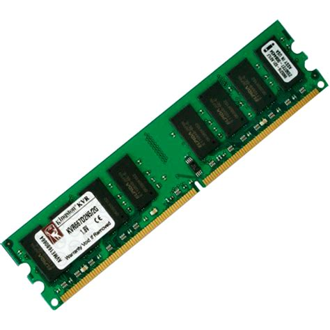

Memória RAM:
Como é uma memória RAM:

A memória RAM é uma memória temporária, ela meio que guarda temporariamente as informações
do computador que estão sendo usados naquele momento, um exemplo? Quando você abre o chrome
o programa é carregado do HD/SSD para a RAM que é muito mais rápida, ai a CPU usa a RAM para
trabalhar, e bem aqui embaixo uma questão que muita gente pergunta:
Por que quanto mais RAM deixa o PC mais rápido?:
Porque quanto mais RAM você tem, dá para abrir mais programas ao mesmo tempo, mas o mais importante de
lembrar? A RAM não salva nada permanentemente, se você desligar o computador tudo que estava na RAM é
apagado.